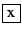
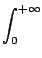
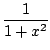
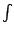

Επόμενο: Πρόγραμμα
Πάνω: Τύποι επιπέδων
Προηγούμενο: Σχόλιο
Επεξεργαστής παραστάσεων
Με την επιλογή Παράσταση -> Νέα παράσταση
(ή πληκτρολογώντας την συντόμευση Alt+E)
ανοίγει ένας νέος επεξεργαστής παραστάσεων πάνω από το επίπεδο στο οποίο
βρίσκεται
ο κέρσορας (ή πάνω από κάποιο επιλεγμένο επίπεδο). Συγχρόνως εμφανίζεται
στο κάτω μέρος του παραθύρου και το επιστημονικό
πληκτρολόγιο (πατήστε το κουμπί
 στο πάνω δεξιά μέρος του επιστημονικού πληκτρολογίου
αν δεν το θέλετε).
Ο επεξεργαστής εκφράσεων μας επιτρέπει να εισάγουμε πολύπλοκες
μαθηματικές παραστάσεις σε δύο διαστάσεις, όπως τις γράφουμε στο χαρτί.
Έστω, για παράδειγμα, πως θέλουμε να εισάγουμε την παράσταση:
Με την επιλογή Alt+E ανοίγουμε τον επεξεργαστή παραστάσεων οπότε
εμφανίζεται επιλεγμένο ένα 0.
Στην συνέχεια, και χωρίς να πειράξουμε την επιλογή,
πληκτρολογούμε διαδοχικά τα εξής (το πλήκτρο ή PgUp βρίσκεται στο κάτω δεξιά μέρος του πληκτρολογίου του
υπολογιστή):
-
x + 1 (για να επιλέξουμε το x + 1)
/ (για την διαίρεση)
-
x + 2
- * 3 + 4 / x
-
^ 5
Μπορούμε να μετακινήσουμε την τρέχουσα επιλογή στο "δέντρο της παράστασης"
με τα πλήκτρα (βέλη) μετακίνησης :
- μετακινεί την επιλογή ένα επίπεδο προς τα πάνω στο δέντρο,
δηλαδή
επιλέγεται η
συνάρτηση ή ο τελεστής που έχει την τρέχουσα επιλογή ως όρισμα
(επίσης επιλέγονται και τα άλλα ορίσματα της συνάρτησης ή του τελεστή)
-
μετακινεί την επιλογή ένα επίπεδο προς τα
κάτω στο δέντρο, δηλαδή επιλέγεται το πρώτο όρισμα της
συνάρτησης ή του τελεστή της τρέχουσας επιλογής
-
or
επιλέγει τον αριστερό ή δεξιό "αδερφό" της
τρέχουσας επιλογής
- Ctrl+
ή Ctrl+
ανταλλάσσει την τρέχουσα επιλογή
με τον αριστερό ή δεξιό "αδερφό" της
Ας δούμε ακόμα ένα παράδειγμα. Έστω ότι θέλουμε να εισάγουμε την παράσταση:

Με την επιλογή Alt+E ανοίγουμε τον επεξεργαστή παραστάσεων οπότε
εμφανίζεται επιλεγμένο ένα 0.
Στην συνέχεια, και χωρίς να πειράξουμε την επιλογή, πληκτρολογούμε
διαδοχικά τα εξής:
-  στο επιστημονικό πληκτρολόγιο ή Ctrl+S στο
πληκτρολόγιο του υπολογιστή για να πάρουμε ένα αόριστο ολοκλήρωμα
-
, για να αλλάξουμε το αόριστο ολοκλήρωμα σε ορισμένο
(για την αντίστροφη
λειτουργία, επιλέγουμε κάθε ένα όριο και πατάμε το πλήκτρο Βackspace)
-
1/(1+x^2)
για να αντικαταστήσουμε το 0 με την συνάρτηση 1/(1+x^2)
-
για να επιλέξουμε το άνω όριο
- στο επιστημονικό πληκτρολόγιο για να αντικαταστήσουμε το 1
- Enter για να αποτιμήσουμε το ολοκλήρωμα
Ακολουθεί ένας κατάλογος των άλλων ειδικών πλήκτρων στον επεξεργαστή εκφράσεων:
, αν έχει επιλεγεί μια ακολουθία, προσθέτει ένα 0 στο τέλος
της και το επιλέγει (μαζί με το πρώτο). Μπορούμε να μετακινήσουμε τα
προσφάτως δημιουργημένα 0 στην
ακολουθία με Ctrl+
και Ctrl+
. Αν η επιλογή δεν είναι
ακολουθία, δημιουργεί
μια ακολουθία μεγέθους 2 με πρώτο στοιχείο την επιλογή, αρχικοποιεί
το δεύτερο σε 0 και το επιλέγει.
( αν έχει επιλεγεί μια ακολουθία, δημιουργεί
μια συνάρτηση και την εφαρμόζει στην ακολουθία αυτή. Το όνομα της
συνάρτησης αυτής αρχικοποιείται
σε f και επιλέγεται με
(Αφού επιλέξουμε το f
πληκτρολογούμε το όνομα της επιλογής μας
για να το αντικαταστήσουμε). Αν έχει επιλεγεί ένα διάνυσμα ,
αντικαθίσταται με μια ακολουθία.
[ αν έχει επιλεγεί μια ακολουθία, αντικαθίσταται από ένα
διάνυσμα,
αν έχει επιλεγεί ένα διάνυσμα, δημιουργείται
μια ευρετηριασμένη θέση διανύσματος/πίνακα. Το όνομα του
διανύσματος/πίνακα αρχικοποιείται σε
m και επιλέγεται με
(Αφού επιλέξουμε το m
πληκτρολογούμε το όνομα της επιλογής μας
για να το αντικαταστήσουμε).
- πλήκτρα σε συνδυασμό με το Ctrl
- Ctrl+A: επιλογή όλων
- Ctrl+C: αντιγραφή επιλογής στο πρόχειρο (όπως στα Windows)
- Ctrl+V: επικόλληση επιλογής στο πρόχειρο
- Ctrl+T: μετάφραση επιλογής σε
LATEX και αντιγραφή στο πρόχειρο.
Η μετάφραση επίσης αντιγράφεται στην έξοδο
Msg, και για να την
εμφανίσουμε (ή να την αποκρύψουμε) πρέπει να
κάνουμε κλικ
στο πλήκτρο Msg του επιστημονικού πληκτρολογίου
- Ctrl+E: αποτίμηση επιλογής
- Ctrl+F: παραγοντοποίηση επιλογής
- Ctrl+N: κανονικοποίηση επιλογής
- Ctrl+P: ανάλυση επιλογής σε μερικά κλάσματα
- Ctrl+I (ή Tab): εμφάνιση ολοκληρώσεων (θέση στο ευρετήριο
της Online βοήθειας στη συνάρτηση της οποίας το όνομα αρχίζει με τα
ίδια γράμματα που έχουν ήδη πληκτρολογηθεί).
- Ctrl+S: ολοκλήρωμα επιλογής
- Ctrl+L: όριο επιλογής
- Ctrl+D: παράγωγος επιλογής
- Ctrl+Z: αναίρεση
- Ctrl+Y: ακύρωση αναίρεσης
Επόμενο: Πρόγραμμα
Πάνω: Τύποι επιπέδων
Προηγούμενο: Σχόλιο
Η τεκμηρίωση του giac γράφτηκε από τον Bernard Parisse
Μετάφραση στα Ελληνικά : Χρήστος Γ. Αγγελόπουλος. Διασκευή : Αλκιβιάδης Γ. Ακρίτας